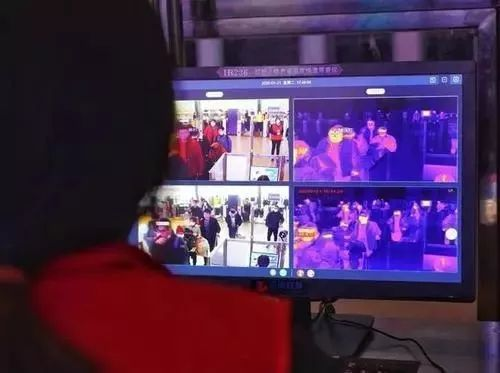
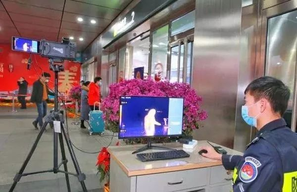
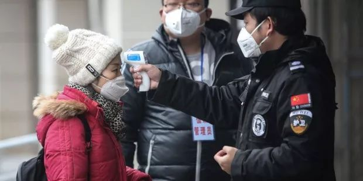

叶青疫区日记：三位医生
原文链接 备份链接 非常时期，武汉成了全国人民挂念、祈福的城市。封城后，武汉人民的真实生活是什么样？ 正和岛自1月26日起特别推出《叶青：我在武汉疫区的第N天》专栏。叶青是一位定居武汉40年的市民，也是一名学者和官员。接下来的一段时间，他 …


受疫情影响，各地对非接触式的红外测温仪器的需求正在持续提升，相关企业订单也在快速增长。目前以高德红外、大立科技、久之洋、康拓红外等为代表的红外设备企业已积极调配产能，加班加点保障产品生产供应。
来源：《潜望》
作者：郭晓峰
XT236，看似很普通的一串字符，却坚守着新型冠状病毒肺炎最严重的武汉的第一道防线。
2月3日，武汉地铁2号线上的中山公园站，武汉高德红外的工作人员正在安装全自动红外体温快速筛查仪，产品型号XT236。
“今天的任务是中山站B安检口安装一台，C出口两台，汉正街站B出口安装三台，大智路站V和D安检处安装四台。目前武汉地铁已安装约30台，基本上实现了全部覆盖。”高德红外售后服务部经理束军告诉《潜望》。
前一天，武汉火神山医院完成交付，雷神山医院也交付在即，XT236也第一时间安装在这两家医院和供医生住宿的酒店里。XT236作为进出人员体温检测的第一道防线，用于保护医护人员及后勤保障人员实时监测体温，有效规避交叉感染。
束军的主要工作内容是调度，就是哪里需要安装设备就安排一线工人去安装，其次是提供售后技术服务。目前，包括武汉天河机场、武汉高铁站、武汉火车站、武汉协和医院等人员流动密集型区域都已部署了XT236。据束军介绍，从疫情爆发到目前为止，高德红外在武汉安装了近300台红外体温快速筛查仪，全省超过500台。“整体数量还在不断增加中。”

面对已经开始的春运返潮，防控成为重中之重，尤其是对于体温的检测。到目前为止，近两千台高德红外所生产的全自动红外体温快速筛查仪已经安装到了北京、上海、广东、福建、浙江、江苏、四川、云南、安徽等全国多地的医院、车站、机场等人流密集的公共场所。

一个画面最多可测百人体温
据束军介绍，从去年12月底开始，高德红外的就已开始对一些场所就行设备安装。“我们是具备疫情防控能力的专业技术型企业，所以警觉性比较高，第一次看到冠状病毒肺炎的新闻后就开始有所准备。”
17年前的SARS疫情事件，在中国的疫情防治能力还不够成熟的大背景下，规模尚小的高德红外就研制出能有效提高疫情检测效率的第一代红外人体测温设备。“现在这已经是高德的第四代红外测温产品，经过多轮迭代后，最新的设备能实现人脸检测，无需接触即可实现采集旅客额温，超出一定范围才发出拦截警报，无发热症状的旅客快速通过时基本无感。”高德红外民品技术总负责人王鹏介绍道。
据束军回忆，1月14日接到疫情通告之前，每天安装量大概是几台，14日当天开始加大安装量。“那一天就安装了近50台，工人连续干了两天没休息，目前一天最高安装上百台。”在他和一线安装工人眼里，多装一个设备，就意味着能让更多人不被感染。
体温测量设备主要分为接触式和非接触式，两者最大的区别为是否接触被测者的皮肤，目前疫情防控用的大多都为非接触式测温仪，XT236属于后者。之所以称它为疫情防控的第一道防线最主要原因是：“非接触式测温”、“大规模人群实时体温测量”、“自动抓取发热人群”这三个特点。
新冠肺炎作为一种传染病，其最大的防治难点在于近距离接触时的高传染性。传统的水银温度计、额温枪、点温仪等测温工具都需要与被测人员进行直接或近距离接触，这就带来了极大的交叉感染风险。

而红外体温快速筛查仪可以很好地解决这个问题，其不仅不需要与被测人员进行直接接触，还能在保持相当检测距离的情况下使检测结果不受影响。
以XT236为例，其最大测温距离达到了10米，这就大大降低了检测人员工作时的接触风险。
解决了测温接触性这个难点后，还需要保证测温工作的时效性。像火车、飞机、长途汽车站等人员流动密集型场所是春运返潮防控的重点，更需要时效性。
红外体温快速筛查仪对人体红外辐射的探测则是实时进行的，通过算法得出体温数据更是以毫秒为单位，系统在工作时，根本不需要人群做任何停留，一旦人进入到设备监测范围后，便可立即测得体温数据。而热成像的另一大优势就是能够获取温度分布图像，也就是能够获得一个画面全部的温度数据，因此即便是大规模人群同时进入到系统的监测范围内，也可以同时测得所有人的体温数据。

据束军介绍，只要人员进入镜头有成像、有画面就可以显示其体温。“通常我们会把超出镜头设定范围最远和最近的边缘人员屏蔽，等他进入范围再测，这样做目的是为了提高精准度。目前同一视频界面可同时检测超过50人，多的时候上百人，具体要看人员在镜头里的位置和密度。单日检测量依据场所不同也不同，像机场种类场所超过10万乃至百万很正常。”
红外设备的安装位置并非随意，室内、恒温、通风、角度是确保精准测温的关键。加上校温，它是一个很漫长的过程。“为了更精准的测温，按照人体温度的范围我们需要逐个校对温度，并把对应数据及曲线置入设备中，最终设备测温精度高达≤±0.3℃，这个精度在全球已经非常高了。”束军说。
由于机场火车站人流非常密集，如果只是测量所有人的温度，那么工作人员筛查的工作量依旧很大，甚至需要24小时一刻不停的盯着电脑屏幕，不然随时可能有发热人员漏掉，而造成更大的问题。鉴于这样的应用场景，XT236专门设计了“自动报警抓拍”功能。
系统可以设置一个报警温度，例如37.3℃，在实时监测范围内多人的体温时，系统会自动将获取的温度和报警温度做一个比较，一旦高于37.3℃，系统便会自动报警，同时自动记录当前发热人员的红外温度图像和可见光图像，以供工作人员的查看和确认。同时XT236还通过先进的AI算法，具有人脸识别功能，只测量人脸温度，同时自动追踪抓取多个发热人员。

产能暂时缺口较大 5G助力
受疫情影响，各地对非接触式的红外测温仪器的需求正在持续提升，相关企业订单也在快速增长。目前以高德红外、大立科技、久之洋、康拓红外等为代表的红外设备企业已积极调配产能，加班加点保障产品生产供应。
“红外测温设备过去主要用在机场、口岸等出入境地方，产量安装并不大，去年出货量也就几百台，此次疫情让大众进一步认识了红外设备并很快在全国普及起来。目前，我们每天全国交付产品大约300台，是过去一年，甚至两年的总量。”束军对《潜望》说。众所周知，之前红外设备多用于军品，民用较少。
2003年SARS疫情，高德红外研制的第一代红外人体测温设备便投入使用并起到关键作用。2013年正式投入运行红外热成像产业化基地，实现探测器国产化，打破了国外的技术封锁。目前的高德红外工业园已建成覆盖底层红外核心器件至顶层完整光电系统的全产业链研制基地。
由于高德红外体温快速筛查系统全部使用的是高德自产、具有自主知识产权的红外探测器，由于核心器件不受制于人，使得高德红外能在疫情爆发的初期生产、供货相对比较充足。
据了解，高德红外目前还在不断开发、升级其他产品，计划推出3-4种型号来应付疫情防控，并新增了15000套的生产计划，即将以每天1000套的速度生产，在短时间内提供更多的产品以支持全国各地的疫情防控工作。除了面向大型人群的红外体温快速筛查仪外，高德红外的手持测温仪也在加大供货。
另一家红外企业浙江大立科技也表示，截至2月2日，大立科技总计已有超千余台套设备部署至武汉、湖北疫区，北京、上海、浙江、江苏、广东等近20个省区市及港澳台地区的机场枢纽、火车站、海关口岸、医院及写字楼等人员密集场所。大立科技还强调，公司目前产能充足，可根据疫情防控需要进一步提高产能。
银河证券最新发布研究报告显示，根据2月2日工信部网站最新信息，目前工信部共收到各地各方面来自红外体温检测仪需求的大概2万台，手持式是30余万台，以上数据只是初步预估。根据疫情防控形势的测算，工信部预计，全市场对全自动红外体温检测仪的需求大概6万台，手持式约55万台。从目前的市场产能来看，缺口较大。
杭州麦乐克科技股份有限公司董事长吕晶在接受《中国电子报》采访时表示，截至1月31日，杭州麦乐克红外测温敏感元器件已经发了40万套给客户用于红外测温仪的生产。“尽管已经‘连轴转’了，但仍无法全面满足客户们的需求，缺口还是很大，公司也在安排更多的员工协助加班生产。”吕晶说。
一位行业人士在接受《潜望》采访时表示，春节复工率低，加上受疫情影响物流受限是导致产能跟不上的主要因素，但这应该是暂时的。随着节后陆续复工，市场需求缺口有望逐步填平。目前，类似崇达技术作为红外体温检测及相关医疗设备的核心元件供应商，在相关部门的支持下，目前部分产线已复工。
值得一提的是，红外设备与5G的结合在此次疫情抗击中也引起关注。
2月2日，广东移动推出“5G+红外”测温信息化应用，与上述传统红外设备最大不同的是，它更灵活。广东移动信息集成中心林效在接受《潜望》采访时表示，5G红外测试系统可满足大数据量、高移动性场景需求，通过5G通讯技术，充分提升了方案的适用范围。一方面，传统红外测温设备通过网线实现数据传输，局限了设备的应用场景。5G技术出现很好地满足了这一需求，系统可随时根据使用需求、人流情况等因素调整位置。另一方面，红外测温系统可通过5G技术与视频监控平台对接，一是与后端的人脸识别功能相结合，有效实现测温后的人员溯源；二是实现测温情况的集中监控，提升工作效率。
据了解，广东省已200余套设备紧急部署实施，目前已落地广州南沙万达广场、汕头金平区人民医院、韶关武江区人民政府等重点项目，预计后续将在全省部署过千套。“已有超过100家单位向广东移动提出使用“5G+红外”测温应用需求。”林效说。
疫情面前，红外测温筑起了第一道防线。它们就像是一双探知热量的眼睛，能快速找出并追踪体温较高的人员，在紧张与奔波中守护着全国人民的平安。

点击图片阅读更多


点击在看，即刻变好看

原文链接 备份链接 非常时期，武汉成了全国人民挂念、祈福的城市。封城后，武汉人民的真实生活是什么样？ 正和岛自1月26日起特别推出《叶青：我在武汉疫区的第N天》专栏。叶青是一位定居武汉40年的市民，也是一名学者和官员。接下来的一段时间，他 …
原文链接 备份链接 疫情封锁之下，在一座城市中，人们的境遇也各不相同。市民被分隔成微小的个体，以往芜杂的日常生活具体为物资采购和一日三餐。普通人谨小慎微地关注着体温、情绪和城市的变化，试图平复暴风眼周围一丝丝微弱的气流。 作 …
原文链接 备份链接 乌鸦曾是单读的一名编辑，在去年夏天离开单读编辑部之后，她依然留在北京，继续打拼。今年春节，乌鸦没有计划回家，也拒绝了朋友的出游邀约，而是继续驻守北京。令她未曾料到的是，新型冠状病毒疫情的到来，以及她武汉籍的身份，使这个 …
原文链接 备份链接 文/何星莹 编辑/单一 疫情吸引了绝大部分视线，但在公众关注之外，余波还在继续。 受疫情影响，消费者纷纷取消春节期间的出行和聚餐计划，旅游业和餐饮业首当其冲，不少从业者苦中作乐调侃自己“暂时被官宣失业”。 年前囤积的物 …
原文链接 备份链接 1988年1月，上海爆发大规模甲型肝炎传染病，最终确诊病例高达31万人，临近的浙江也有7万例，这次甲肝的导火索是食用不洁毛蚶——一种形似蛤蜊的贝类。 32年之后，再次提起这次疫情，每一个老上海人仍记忆犹新，它留给上海 …